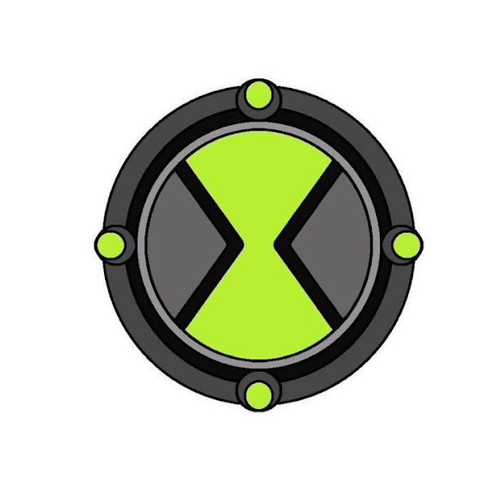
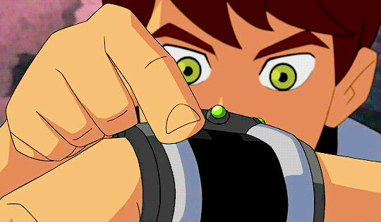
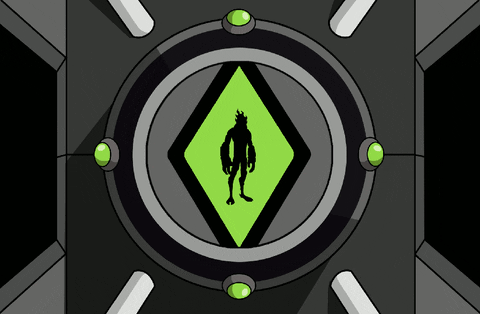

Ben 10 es un dibujo animado creado por "Man of Action" y producido por Cartoon Network Studios. Man of Action es un grupo formado por los creadores de cómics Duncan Rouleau, Joe Casey, Joe Kelly y Steven T.


El Omnitrix es un aparato de origen extraterrestre creado por el galvan Azmuth. El Omnitrix está diseñado como un reloj de pulsera, que puede transformar a su usuario en distintas formas alienígenas, cuyo ADN almacena en su interior. ...
 
Gwendolyn Tennyson, también conocida como Gwen o La Chica de la Suerte, es un personaje ficticio de la serie de dibujos animados Ben 10 y sus series derivadas, siendo estas Ben 10: Fuerza Alienígena ...